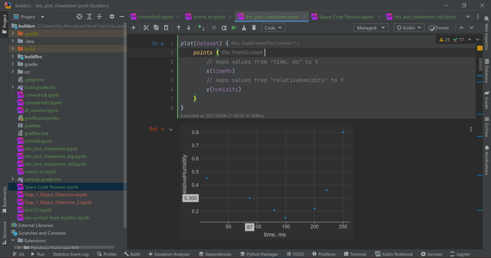

Kotlin Kernel for IPython/Jupyter
Kotlin ([[kotlin_version]]) kernel for Jupyter.
The kernel is a powerful engine designed to enhance your Kotlin REPL experience. It offers support for executing code cells, providing basic code completion, and analyzing errors. With the Kotlin kernel, you gain access to a range of features, including an API for handling outputs, retrieving information from previously executed code snippets, executing generic Kotlin code effortlessly, seamless integration with libraries, and more.

Beta version. Tested with Jupyter Notebook, Jupyter Lab, and Jupyter Console on Windows, Ubuntu Linux, and macOS. The minimal supported versions of clients are given in the table below:
| Client | Version |
|---|---|
| Jupyter Lab | 1.2.6 |
| Jupyter Notebook | 6.0.3 |
| Jupyter Console | 6.1.0 |
To start using the Kotlin kernel for Jupyter, take a look at the introductory guide.
Example notebooks can be found in the samples folder.
Try samples online: 
Contents
- Installation
- Updating
- Usage
- Supported functionality
- Debugging
- Adding new libraries
- Documentation
- Contributing
Installation
There are several ways to use the kernel:
Kotlin Notebook plugin
Simply download and use the latest version of the Kotlin Notebook plugin from the Marketplace. The Kotlin kernel is embedded in it.
Check out the blog post for a quick introduction to Kotlin Notebook.
Conda
If you have conda installed, run the following command to install the stable package version:
conda install -c jetbrains kotlin-jupyter-kernel (package home)
To install the conda package from the dev channel:
conda install -c jetbrains-dev kotlin-jupyter-kernel (package home)
Uninstall: conda remove kotlin-jupyter-kernel
Pip
You can also install this package using pip:
Stable:
pip install kotlin-jupyter-kernel (package home)
Dev:
pip install -i https://test.pypi.org/simple/ kotlin-jupyter-kernel (package home)
Uninstall: pip uninstall kotlin-jupyter-kernel
From sources
To install the kernel from sources, clone the repository and run the following command in the root folder:
./gradlew install
Default installation path is ~/.ipython/kernels/kotlin/.
To install to some other location use option -PinstallPath=, but note that Jupyter
looks for the kernel specs files only in predefined places. For more detailed info
see Jupyter docs.
Uninstall: ./gradlew uninstall
Troubleshooting
There could be a problem with kernel spec detection because of different python environments and installation modes. If you are using pip or conda to install the package, try running post-install fixup script:
This script replaces kernel specs to the "user" path where they are always detected. Don't forget to re-run this script on the kernel update.
Updating
To update the Kotlin kernel, follow the instructions below based on your installation method:
Kotlin Notebook
If you are using the Kotlin Notebook plugin, update it to the latest version within the IDE or manually download and install the latest plugin version from the Marketplace.
Datalore
To update the kernel in Datalore, simply add an environment.yml to the Notebook files containing:
{VERSION} should be replaced by the latest PyPi version of the Kotlin Jupyter kernel, such as 0.11.0.198.
Stop and restart the machine afterwards.
Conda
If you have conda installed, just run the following command to update the stable package version:
conda update -c jetbrains kotlin-jupyter-kernel
To update the conda package from the dev channel:
conda update -c jetbrains-dev kotlin-jupyter-kernel
If you want to change to a specific version of the kernel, take the install command from above and add ={VERSION} to kotlin-jupyter-kernel where {VERSION} should be replaced by the latest PyPi version of the Kotlin Jupyter kernel, such as 0.11.0.198.
For example, for the stable version:
conda install -c jetbrains kotlin-jupyter-kernel={VERSION}
Pip
To update the kernel using Pip, simply run:
Stable:
pip install kotlin-jupyter-kernel --upgrade
Dev:
pip install -i https://test.pypi.org/simple/ kotlin-jupyter-kernel --upgrade
If you want to change to a specific version of the kernel, take the install command from above and add =={VERSION} to kotlin-jupyter-kernel where {VERSION} should be replaced by the latest PyPi version of the Kotlin Jupyter kernel, such as 0.11.0.198.
For example, for the stable version:
pip install kotlin-jupyter-kernel=={VERSION} --ignore-installed
Usage
Kotlin Notebook
Within IDEA with installed Kotlin Notebook plugin, just open a notebook, and you're good to go.
Other clients
Run one of the following commands in console:
jupyter console --kernel=kotlinjupyter notebookjupyter lab
To start using kotlin kernel inside Jupyter Notebook or JupyterLab create a new notebook with kotlin kernel.
The default kernel will use the JDK pointed to by the environment variable KOTLIN_JUPYTER_JAVA_HOME,
or JAVA_HOME if the first is not set.
JVM arguments will be set from the environment variable KOTLIN_JUPYTER_JAVA_OPTS or JAVA_OPTS if the first is not set.
Additionally, arguments from KOTLIN_JUPYTER_JAVA_OPTS_EXTRA will be added.
Arguments are parsed using shlex.split.
Creating Kernels
To create a kernel for a specific JDK, JVM arguments, and environment variables, you can use the add-kernel script:
argparse, so --help, @argfile (you will need to escape the @ in powershell), and --opt=value are all supported. --jvm-arg=arg in particular
is needed when passing JVM arguments that start with -.
If jdk not specified, name is required. If name is not specified but jdk is the name will be
JDK $vendor $version detected from the JDK. Regardless, the actual name of the kernel will be Kotlin ($name),
and the directory will be kotlin_$name with the spaces in name replaced by underscores
(so make sure it's compatible with your file system).
JVM arguments are joined with a ' ', so multiple JVM arguments in the same argument are supported.
The arguments will be added to existing ones (see above section) unless --set-jvm-args is present, in which case they
will be set to KOTLIN_JUPYTER_JAVA_OPTS. Note that both adding and setting work fine alongside KOTLIN_JUPYTER_JAVA_OPTS_EXTRA.
While jupyter kernel environment variable substitutions are supported in env, note that if the used environment
variable doesn't exist, nothing will be replaced.
An example:
Supported functionality
REPL commands
The following REPL commands are supported: [[supported_commands]]
Dependencies resolving
It is possible to add dynamic dependencies to the notebook using the following annotations:
- @file:DependsOn(<coordinates>) - adds artifacts to classpath. Supports absolute and relative paths to class
directories or jars, ivy and maven artifacts represented by the colon separated string
- @file:Repository(<absolute-path>) - adds a directory for relative path resolution or ivy/maven repository.
To specify Maven local, use @file:Repository("*mavenLocal").
Alternative way to do the same is using Gradle-like syntax:
The same syntax can be used in integrations creating.
Note that dependencies in remote repositories are resolved via Maven resolver.
Caches are stored in ~/.m2/repository folder by default. Sometimes, due to network
issues or running several artifacts resolutions in parallel, caches may get corrupted.
If you have some troubles with artifacts resolution, please remove caches, restart kernel
and try again.
Default repositories
The following maven repositories are included by default: - Maven Central - JitPack
Line Magics
The following line magics are supported: [[magics]]
See detailed info about line magics here.
Supported Libraries
When a library is included with %use keyword, the following functionality is added to the notebook:
- repositories to search for library artifacts
- artifact dependencies
- default imports
- library initialization code
- renderers for special types, e.g. charts and data frames
This behavior is defined by json library descriptor. Descriptors for all supported libraries can be found in libraries repository.
A library descriptor may provide a set of properties with default values that can be overridden when library is included.
The major use case for library properties is to specify a particular version of library. If descriptor has only one property, it can be
defined without naming:
%use statement, separated by ,:
%useLatestDescriptors.
Other options are resolving library descriptor from a local file or from remote URL:
List of supported libraries:
[[supported_libraries]]
Rich output
By default, the return values from REPL statements are displayed in the text form. To use richer representations, e.g.
to display graphics or html, it is possible to send MIME-encoded result to the client using the MIME helper function:
HTML helper function:
Rendering
Rendering is a procedure of transforming of the value to the form that is appropriate for displaying in Jupyter client. Kernel supports several features that allow you to render values.
Renderers
Renderers can transform a value into another value. Library can define one or several renderers. Rendering with renderers is controlled via RenderersProcessor. You can access it via notebook. Renderers are applied until at least one renderer can be applied.
DisplayResult and Renderable
If object implements DisplayResult or Renderable, it will be rendered to output JsonObject via its own corresponding method.
Text rendering
Text renderers render objects to strings. Library can define one or several text renderers. Rendering with text renderers is controlled via TextRenderersProcessor. You can access it via notebook. Text renderers are applied until at least one renderer returns non-null string for a passed argument. This kind of renderers can be easily composed with each other. I.e. text renderer for iterables can render its elements with text renderers processor recursively.
Throwables rendering
Throwable renderers do the same thing as renderers do, but only for results of the cells that were not successfully executed, and some exception was generated.
Common rendering semantics
Successfully evaluated value is firstly transformed with RenderersProcessor. Resulting value is checked. If it's Renderable or DisplayResult, it is transformed into output JSON using toJson() method. If it's Unit, the cell won't have result at all. Otherwise, value is passed to TextRenderersProcessor. It tries to render the value to string using defined text renderers having in mind their priority. If all the renderers returned null, value is transformed to string using toString(). Resulting string is wrapped to text/plain MIME JSON.
If the cell execution finished unsuccessfully and exception was generated, then the first applicable throwable renderer
will be chosen for this exception, and exception will be passed to this renderer's render() method. Returned value
will be displayed. If no applicable throwable renderer was found, exception message and stacktrace will be printed
to stderr.
Autocompletion
Press TAB to get the list of suggested items for completion. In Jupyter Notebook, you don't need to press TAB,
completion is requested automatically. Completion works for all globally defined symbols and for local symbols
which were loaded into notebook during cells evaluation.
Error analysis
If you use Jupyter Notebook as Jupyter client, you will also see that compilation errors and warnings are underlined in red and in yellow correspondingly. This is achieved by kernel-level extension of Jupyter notebook which sends error-analysis requests to kernel and renders their results. If you hover the cursor over underlined text, you will get an error message which can help you to fix the error.
Debugging
- Run
./gradlew installDebug. Debugger port is selected automatically. Default port is 1044, consequent ports will be used if it's in use. If you want an exact port, specify-PdebugPort=<port>Gradle option. - Run
jupyter notebook, open the desired notebook. - Attach a remote debugger to JVM with corresponding port (debug port number will be printed in terminal on kernel startup).
Adding new libraries
Read this article if you want to support new JVM library in the kernel.
Documentation
There is a site with rendered KDoc comments from the codebase.
If you are a library author you may be interested in api module
(see adding new libraries). There is also a lib module which contains entities
available from the Notebook cells and shared-compiler module which may be used for Jupyter REPL integration
into standalone application or IDEA plugin.
Contributing
We welcome contributions to further enhance our project! If you come across any issues or have feature requests, please don't hesitate to file an issue.
For issues specifically related to the Kotlin Notebook plugin, kindly utilize another tracker.
Pull requests are highly appreciated! When submitting a pull request, please ensure that it corresponds to an existing issue. If you are planning a substantial change, we recommend discussing it with a project maintainer. You can reach out to me through email, Kotlin Slack, or Telegram. We look forward to your contributions!